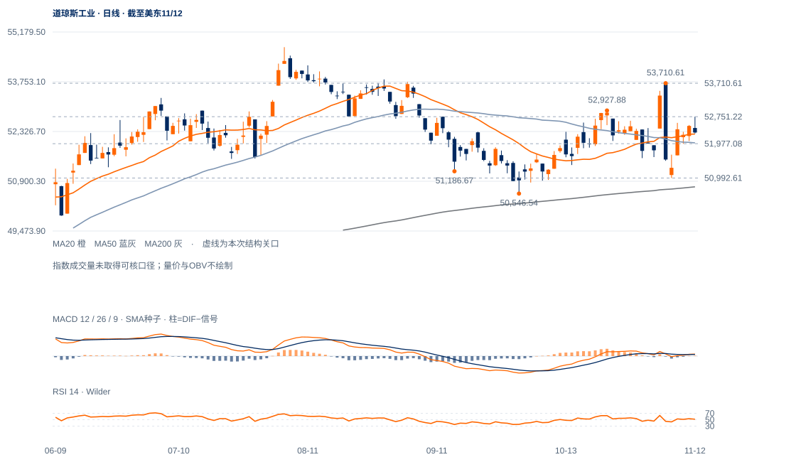

领先主要体现为抗跌
20日绝对涨幅仅0.23%，相对纳指比值升5.55%；两者不能合并写成强劲上涨。现收52297.09略高于20日52253.57及50日52000.64。
未来1—5日偏向区间整理；道指的防守优势较清楚，但尚缺向上扩展。1—3周改善要落实到53711上方保持。

查看大图 ↗20日绝对涨幅仅0.23%，相对纳指比值升5.55%；两者不能合并写成强劲上涨。现收52297.09略高于20日52253.57及50日52000.64。
ER20为0.014，说明20日累计波动很大、净位移很小。11月5日高53710.61与6日低50992.61之间仍有明显双向空间，不适合以一次均线穿越判趋势。
12日盘中到52751.22，收52297.09，收盘位置仅5.4%、上影占振幅67.3%；尚未兑现前日较强收盘的向上跟进。
价格仍高于上行的200日线50740.73，且近期相对纳指持续领先；若缩短回撤并持续提高收盘，区间上沿仍可能再受测试。